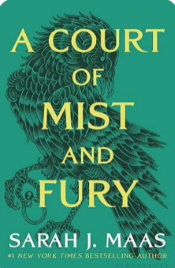
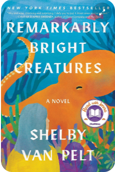

Welcome to BookBeast
"A Site that help you to discover books and it's features"
FICTION BOOKS
swipe up to read
Science Fiction
Stellar Odyssey
by Roshan Weerage
Review
Sci-Fi Mastermind creates a vivid and imaginative universe in "The Stellar Odyssey." The world-building is exceptional, and the story explores profound themes of Science Fiction/Fantasy.
ReadScience Fiction

Realm of Enchantment
by Emberly Lily Summers
Review
Fantasy Weaver enchants readers with a spellbinding narrative in "Realm of Enchantment." The magical world and well-developed characters make this a fantasy masterpiece. Prepare to be transported to a realm of wonder.
ReadContemporary Fiction

Whispers of the Heart
by Uma Eachempati
Review
Contemporary Author delivers a heartwarming tale that explores the intricacies of human relationships. "Whispers of the Heart" is a beautifully written story that resonates with authenticity.
ReadHistorical Fiction

Echoes of the Past
by Peter Rimmer
Review
Historical Storyteller transports readers to another era in "Echoes of the Past." The attention to historical detail, combined with compelling characters, creates an engaging narrative that educates and entertains.
ReadScience Fiction

A Court of Mist and Fury
by Sarah J. Maas
Review
"A Court of Mist and Fury" is a compelling and emotionally charged sequel that surpasses its predecessor in terms of depth and complexity. Sarah J. Maas skillfully weaves a tale of love, sacrifice, and self-discovery that will keep readers hooked until the very end.
ReadHistorical Fiction

Badluck and Trouble
by Lee Child
Review
In "Bad Luck and Trouble," Jack Reacher, the enigmatic and tough former military police major, finds himself drawn into a mystery involving his former colleagues from the elite military unit, the 110th Special Investigations Unit.
ReadScience Fiction

Remarkably Bright Creatures
by Shelby Van Pelt
Review
Shelby Van Pelt’s debut novel is a gentle reminder that sometimes taking a hard look at the past can help uncover a future that once felt impossible.
Read